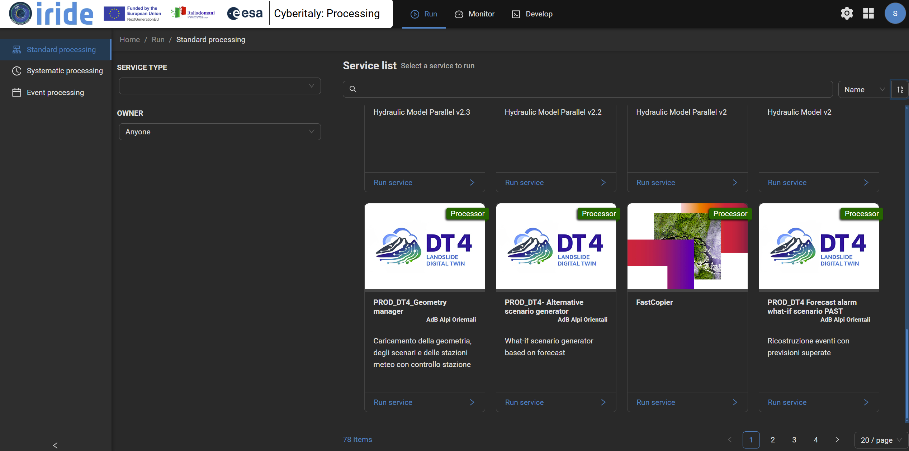
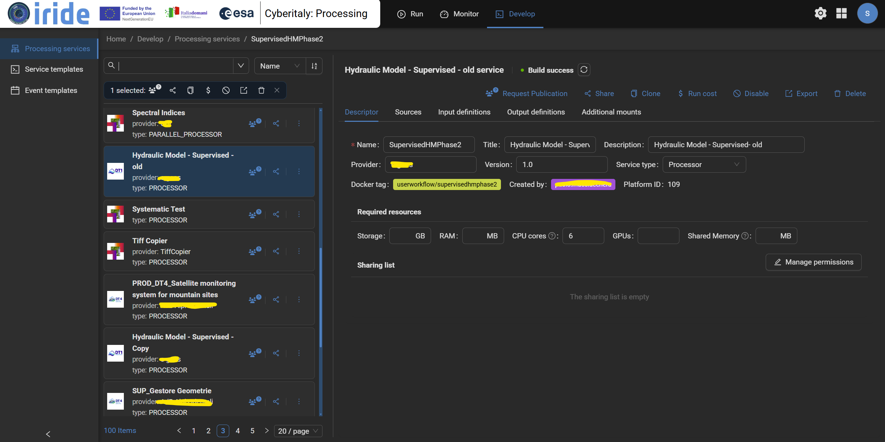
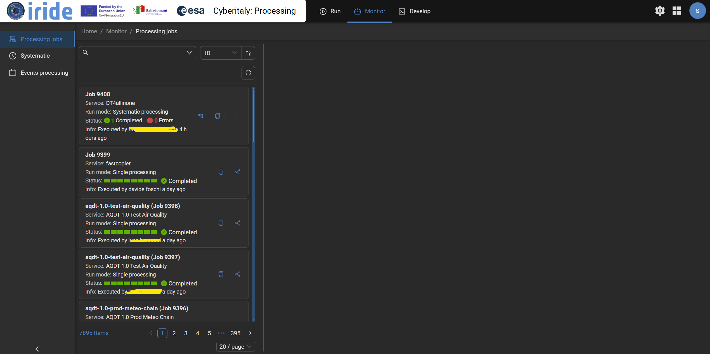

Introduction🔗
As part of the IRIDE program, CyberItaly serves as the national reference framework for enabling, integrating, and utilizing thematic Digital Twins.
CyberItaly enables the simulation of “what-if” predictive scenarios related to Earth system processes or natural hazards—such as landslides, floods, air quality, and coastal dynamics.
Through a scalable, interoperable, cloud-native platform, CyberItaly transforms geospatial information, models, and in-situ and satellite data into advanced modeling and decision-support tools, providing public bodies and stakeholders with resources for prevention, planning, and the management of territory and emergencies.
IRIDE CyberItaly facilitates the rapid integration and scalable, operational configuration of Digital Twins, streamlining data access and integration while fostering interaction between decision-makers and Digital Twin developers.
Value for end-users and decision-makers The platform offers an intuitive environment for exploring data, simulations, and scenarios: -Direct decision support through systematic and automated “what-if” scenario simulations, available on-demand or triggered by specific events. -A user-friendly web interface designed to facilitate interaction with complex data and advanced models. -Operational insights via intuitive data visualization and analysis tools, enabling the exploration of modeling results and geospatial information. -Creation of customized thematic dashboards to monitor specific phenomena and support decision-making processes.
Value for Digital Twin developers CyberItaly provides a suite of services dedicated to the development and integration of new models and algorithms, including: -Advanced access to satellite and non-satellite data for management, transformation, and processing. -Accelerated onboarding of new Digital Twins through standardized integration and containerization. -Manual or automated execution of algorithms and models, orchestrated scalably to handle complex processing loads. -Definition of advanced, automated scenarios using APIs and functions that allow for the easy integration of custom models and workflows. -Publication and management of results within the CyberItaly catalog, with visibility levels configurable for different user groups. -Interoperability by design, fostering reuse and scalability across Digital Twins and IRIDE services. -Scalable cloud infrastructure supporting both development and operations.
Key Features🔗
CyberItaly offers an integrated, scalable environment for the development, integration, and use of Digital Twins based on Earth Observation data, providing advanced tools for both model developers and end-users involved in land management and natural risk mitigation. Built on a cloud-native architecture, the platform is designed to ensure horizontal and vertical scalability via Kubernetes orchestration, high interoperability through standardized APIs and OGC-compliant interfaces, and customizable integration scenarios to accommodate diverse Digital Twin operational models.
CyberItaly currently hosts four thematic Digital Twins, each dedicated to simulating and analyzing specific environmental dynamics or natural risks. Together, these models create a multi-thematic digital environment capable of supporting spatial planning, risk prevention, and emergency management.
Insights, Integration, and Efficiency with CyberItaly🔗
CyberItaly provides a comprehensive set of functionalities designed to maximize the value of Digital Twins and EO data:
Combine Data and Services for Information Generation: CyberItaly seamlessly combines data and services to transform raw information into actionable insights, empowering informed decision-making. Its standard interface enables to integrate new dataset driven by user needs.
{kind=link}

Integrate New Digital Twins: CyberItaly’s adaptable platform allows users to effortlessly integrate new Digital Twins, ensuring access to cutting-edge technologies without constraints.
{kind=link}

Monitor Processing Execution: CyberItaly’s monitoring system offers real-time oversight, enabling users to track progress, identify issues, and make quick adjustments for enhanced efficiency and accuracy.
{kind=link}
